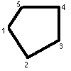

Cette page reprend l'aide d'OptGeo 3.03 (version pour ordinateur, à la souris). Dans la version web, on touche ou on clique au lieu de « cliquer deux fois » ; voir Utiliser OptGeo sur le web.
Polygone réfractant
(dont : prisme, lame à faces parallèles, etc.)

Définition
Il est défini par les sommets 1, 2, 3..., et par les indices de réfraction.
Le polygone doit être connexe (il ne doit pas y avoir d'intersection entre côtés non consécutifs) ; le logiciel vérifie cette condition de connexité.
Le polygone peut être ajouté :
- en cliquant sur le bouton de la barre d'outils ayant la forme ci-dessus, puis en choisissant le nombre de sommets via une boîte de dialogue, puis en faisant un clic simple pour saisir chacun des sommets (ne pas maintenir le bouton de la souris appuyé entre deux points).
OU
- menu « Ajouter » puis « Système optique réel » puis « Polygone réfractant ». On donne alors le nombre de sommets, puis les coordonnées des sommets.
Options
On peut imposer
- la couleur à l'écran du polygone
- les indices de réfraction dans le bleu, le vert et le rouge ; par défaut, les valeurs 1,8, 1,6 et 1,4 sont attribuées. On peut aussi choisir directement un matériau dans une liste qui comprend quelques verres, l'eau, et des plastiques optiques. Plus précisément, les indices sont donnés pour les longueurs d'onde de référence suivantes : 486,1 nm, 587,6 nm et 656,3 nm. Pour modifier la liste des éléments proposés, cliquer ici.
- les conditions d'existence d'un rayon réfléchi, dans le sens entrant et dans le sens sortant ; le rayon réfléchi peut exister « toujours », « jamais », « seulement si le réfracté existe », « seulement si le réfracté n'existe pas ». Lorsqu'il y a à la fois un rayon transmis et un rayon réfléchi, le rayon réfléchi est un « rayon enfant », terminologie utilisée dans la définition du rayon unique, de la source ponctuelle, et de l'onde plane.
Ces propriétés peuvent être rendues accessibles :
- à la construction du polygone si on passe par le menu « Ajouter »
- à tout instant en cliquant sur le bouton « Propriétés » de la barre d'outils, puis en cliquant sur un des cercles bleus qui apparaissent sur l'élément dont on veut obtenir les propriétés ; ne pas oublier à la fin de cliquer sur le bouton « Fin prop. » de la barre d'outils pour quitter le mode propriétés.
Divers
On peut demander que la normale au polygone soit tracée à chaque point d'intersection d'un rayon lumineux avec ce polygone :
- menu « Options », vérifier que « Afficher les normales » est coché
OU
- dans la barre d'outils, boîte à cocher « Normales »
On peut aussi demander que les angles d'incidence et de réfraction soient affichés (en °) :
- menu « Options », vérifier que « Afficher les angles » est coché
OU
- dans la barre d'outils, boîte à cocher « Angles d'incidence et de réfraction »
L'angle de réflexion n'est pas affiché, afin de ne pas surcharger les représentations.
Le nombre de décimales sur les angles est fixé dans la boîte de dialogue des options des normales : menu « Options » puis « Options des normales »